Manual de Usuario
Sistema de Reporte de Tiempos — SCL Consultores
Introducción
Esta plataforma permite a los colaboradores registrar las horas de trabajo dedicadas a proyectos y actividades, mientras que los jefes a cargo y administradores pueden revisar, aprobar y analizar la información en tiempo real.
Este manual describe todas las funcionalidades del sistema organizadas por perfil de usuario, para que puedas comenzar a utilizarlo de manera rápida y eficiente.
¿Qué es el Sistema de Reporte de Tiempos?
Es una aplicación web accesible desde cualquier navegador. Entre sus principales funcionalidades se encuentran:
- Registro de horas trabajadas por proyecto y actividad
- Seguimiento del tiempo en múltiples proyectos simultáneamente
- Aprobación o rechazo de reportes por parte del jefe a cargo
- Consulta de reportes históricos y estadísticas por período
- Administración de usuarios, proyectos y clientes
Roles de Usuario
El sistema cuenta con tres roles, cada uno con accesos y permisos específicos:
| Rol | Descripción | Principales Actividades |
|---|---|---|
| Colaborador | Registra sus horas de trabajo en proyectos y actividades asignadas. | Registrar tiempos diarios de entrada y salida, seleccionar proyectos, agregar descripción, enviar reportes. |
| Jefe a cargo | Registra sus horas de trabajo, revisar y aprobar los reportes de tiempos del equipo a su cargo. | Registrar tiempos diarios de entrada y salida, ver reportes del equipo, aprobar o rechazar registros, agregar comentarios. |
| Administrador | Gestiona usuarios, proyectos y configuración general del sistema. | Crear y editar usuarios, asignar roles, administrar proyectos, exportar reportes. |
Acceso al sistema
Cómo iniciar y cerrar sesión en el sistema de reporte de tiempos
Ingresar al Sistema
Para acceder al Sistema de Reporte de Tiempos, sigue los pasos que se indican a continuación:
- Abre tu navegador web.
- En la barra de direcciones, escribe: https://sclconsultores.com.mx/reportetiempos/login.php
- Aparecerá la pantalla de inicio de sesión con el logotipo de SCL Consultores y el mensaje "¡Bienvenido!".
- Escribe tus claves de acceso. Recuerda que tu usuario es tu correo corporativo y tu contraseña es tu número de empleado.
- Haz clic en "Acceder". Si tus credenciales son correctas, serás redirigido al panel principal.
🔐 Campo de Usuario
Ingresa tu correo corporativo para acceder al sistema.
🔒 Campo de Contraseña
Introduce tu número de empleado como contraseña.
Pantalla principal de inicio de sesión mostrando los campos de usuario, contraseña y botón de acceso.
Cerrar Sesión
Es importante cerrar sesión al terminar, especialmente en computadoras compartidas:
- Localiza la inicial de tu nombre de usuario en la esquina superior derecha dentro de la barra de navegación.
- Haz clic en la inicial de tu nombre; se desplegará un menú con opciones.
- Selecciona "Cerrar sesión". Tu sesión se cerrará y serás redirigido a la pantalla de inicio de sesión.
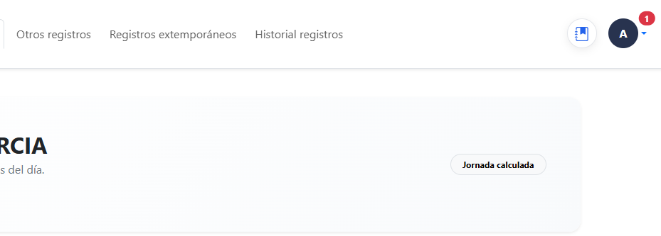
🪪 Menú de Usuario
Inicial de tu nombre que despliega el menú de usuario.
Imagen ampliada que muestra el menú de usuario ubicado en la esquina superior derecha de la pantalla
Guía para el colaborador
Todo lo que necesitas saber para registrar y gestionar tus tiempos diarios.
Pantalla principal del colaborador
La pantalla principal te permite llevar a cabo tus registros de actividades diarias. Cuenta con las siguientes funciones:
- Vista del total de horas registradas en la jornada actual.
- Listado de entradas de tiempo con fecha, proyecto, actividad y horas.
- Muestra si los reportes están pendientes o aprobados.
- Acceso rápido para crear un nuevo registro.
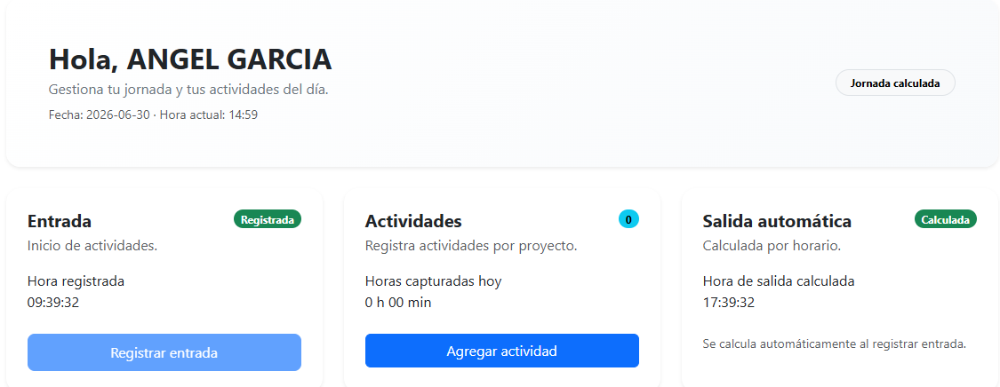
📝 Registrar Entrada
Botón para registrar la hora de inicio de tu jornada laboral.
➕ Agregar Actividad
Acceso rápido para crear un nuevo registro de actividad.
Pantalla principal mostrando entrada, actividades y salida automática.
Registros
Entrada y Salida
- El usuario registra su entrada mediante el botón “Registrar entrada”.
- El sistema solicita confirmación y registra automáticamente la hora.
- La salida se calcula automáticamente con base en la jornada laboral de cada usuario.
Actividades
Para agregar un nuevo registro de tiempo:
- Desde el panel principal, haz clic en el botón "Agregar actividad”.
- Se abrirá el formulario de registro. Se establecerá la hora actual como la hora de inicio, automáticamente.
- En el campo "Hora fin", ingresa el número de horas dedicadas.
- En el campo "Proyectos disponibles", selecciona de la lista desplegable el proyecto al que corresponde el trabajo.
- En el campo “Jefe responsable”, selecciona al jefe encargado de tu equipo.
- En el campo “Cliente”, selecciona al cliente de la actividad.
- En el campo "Descripción libre", escribe una breve descripción de la actividad realizada.
- Haz clic en "Guardar actividad por proyecto" para registrar la entrada. Aparecerá en tu tabla de tiempos.
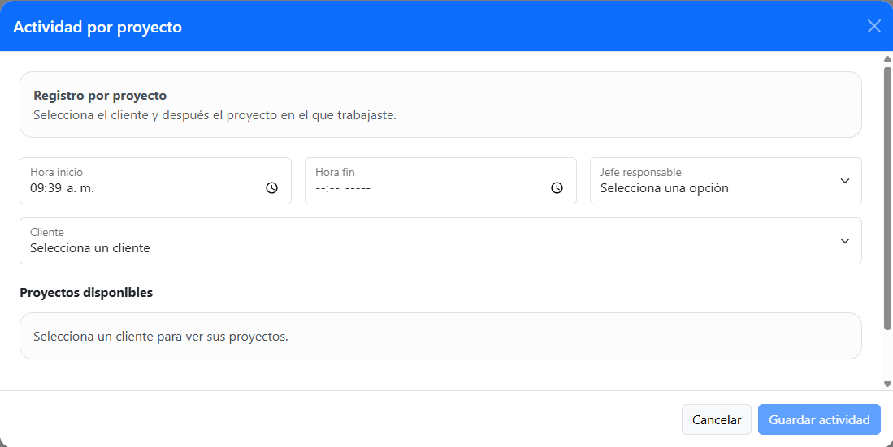
🕐 Hora de Inicio
Se establece automáticamente con la hora actual del sistema al momento de crear el registro.
🕒 Hora Fin
Ingresa manualmente el número de horas dedicadas a esta actividad específica.
👤 Selección de Jefe Responsable
Selecciona de la lista desplegable al jefe encargado de tu equipo que aprobará este registro.
Ventana del formulario de registro de actividad, mostrando: hora de inicio, hora fin, jefe responsable, cliente y proyecto disponible.
Eliminar un Registro
- Localiza el registro en la tabla de tiempos.
- Haz clic en el ícono de "Eliminar" al final de la fila.
- Confirma la acción en la ventana de confirmación que aparecerá.
- El registro se eliminará permanentemente de la base de datos.
Otros registros (Incidencias)
Tipos disponibles: Vacaciones, Permisos, Incapacidad, Cumpleaños.
Registro de Vacaciones y Permisos
- Desde el panel principal, haz clic en el botón "Otros registros”.
- Selecciona la opción deseada (vacaciones o permisos).
- Se desplegará un calendario donde podrás seleccionar múltiples días.
- Agrega un comentario (opcional).
- Haz clic en "Guardar registro" para registrar los días seleccionados. Aparecerán en tu tabla de historial.
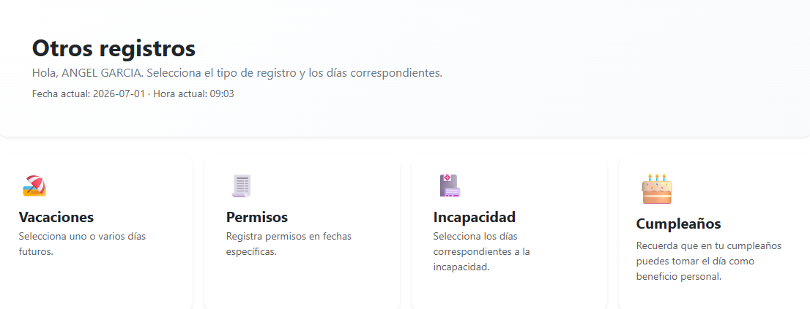
Vacaciones
Botón para seleccionar días de registro de vacaciones.
Permisos
Botón para seleccionar días de permisos que se solicitaron.
Incapacidad
Botón para seleccionar de días de incapacidad.
Pantalla de otros registros mostrando vacaciones, permisos, incapacidad y cumpleaños
El día de cumpleaños se registra como asueto automáticamente como un beneficio extra si cae en día laboral.
Registro de Incapacidad
- Desde el panel principal, haz clic en el botón "Otros registros”.
- Selecciona la opción "Incapacidad".
- Se desplegará un calendario donde podrás seleccionar múltiples días.
- Agrega un comentario (opcional).
- Agrega la documentación solicitada por recursos humanos.
- Haz clic en "Guardar registro" para registrar los días seleccionados. Aparecerán en tu tabla de historial.
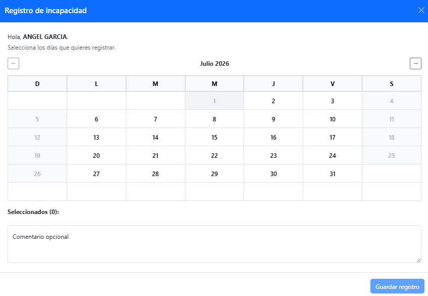
Calendario Incapacidad
Calendario interactivo que muestra las fechas disponibles para seleccionar días de incapacidad.
Comentarios
Campo de comentarios opcionales para registro de incapacidad.
Botón de guardar
Botón para guardar registro de incapacidad.
Calendario de la sección "Otros registros" mostrando fecha, campo de comentario y botón de guardar registro
Registros extemporáneos
- Permite registrar jornadas pasadas no capturadas previamente.
- Solo se pueden seleccionar días sin registros previos.
- El usuario define manualmente la hora de entrada.
- Posteriormente puede registrar actividades como en un registro normal.
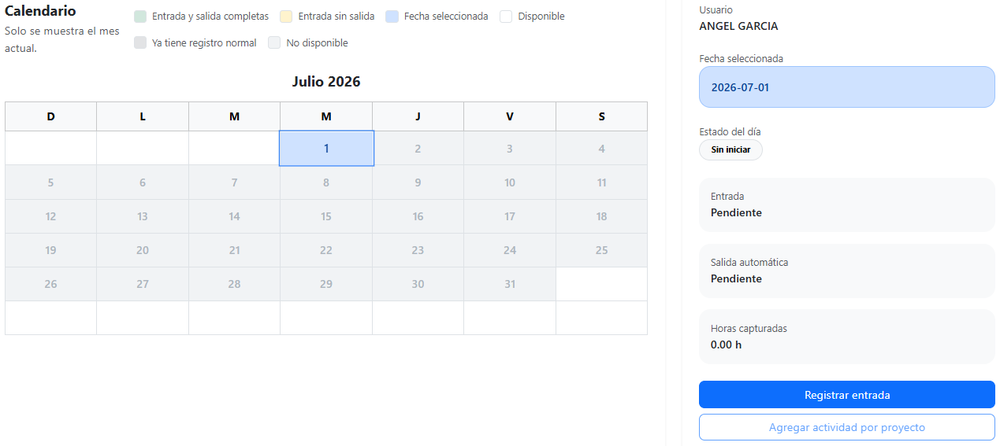
Calendario Interactivo
Calendario interactivo que muestra las fechas disponibles para seleccionar días de registros extemporáneos.
Botón de guardar
Botón para guardar registro de actividades extemporáneas.
Botón de actividad
Botón para agregar actividades a registros extemporáneos.
Calendario interactivo para agregar registros extemporáneos disponibles del mes en curso.
Historial de Registros
- Se muestra un listado de registros realizados.
- Incluye tipo, fecha y comentarios.
- Permite consultar registros previos del día seleccionado en el calendario.
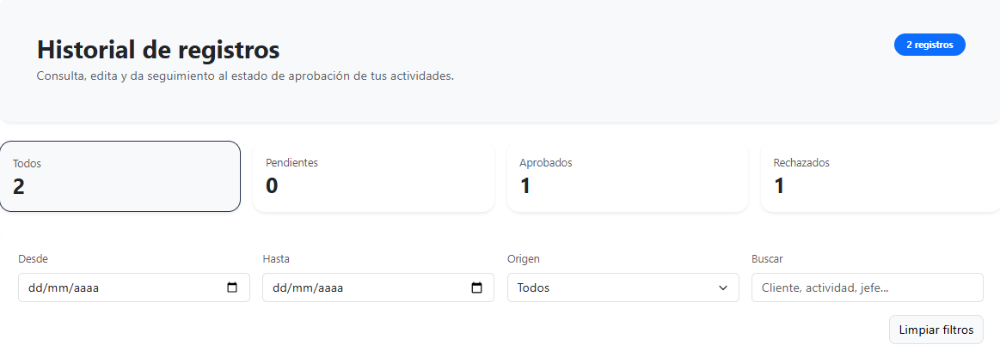
Total de reportes pendientes
Ventana informativa de reportes que están pendientes de revisar por el jefe a cargo.
Total de reportes aprobados
Ventana informativa de reportes que han sido aprobados por el jefe a cargo.
Total de reportes rechazados
Ventana informativa de reportes que han sido rechazados por el jefe a cargo.
Pantalla del historial de registros mostrando registros pendientes, aprobados y rechazados.
Editar un registro
- Puedes editar registros si aún no han sido aprobados o si fueron rechazados.
- Para consultarlos puedes dirigirte al Historial de Registros y filtrar por estado o por fecha.
- Una vez ubicado el registro que se desea editar, presiona el icono azul que está en la esquina superior derecha de este mismo.
- Podrás cambiar todos los elementos, igual que cuando recién haces un registro nuevo.
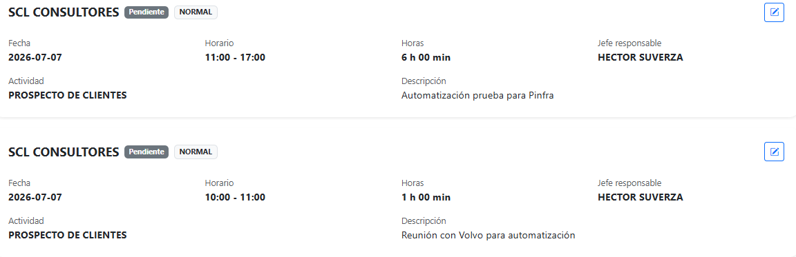
Botón de edición
Presiona para abrir una ventana que te permite editar el registro.
Información general del reporte
Ventana informativa de reportes que muestra fecha, hora, actividad y descripción del reporte.
Pantalla del historial de registros mostrando los detalles de cada registro realizado.
Reglas del Sistema
- La jornada laboral estándar es de 8 horas.
- No se pueden exceder las horas diarias permitidas.
- No se permite duplicidad de registros en la misma fecha.
- Los registros extemporáneos solo aplican para días sin registro.
Evita acumular registros extemporáneos.
Guía para el jefe a cargo
Revisión, aprobación y gestión de los reportes de tiempo del equipo.
Pantalla principal del jefe a cargo
La pantalla principal te permite llevar a cabo tus registros de actividades diarias. Cuenta con las siguientes funciones:
- Vista del total de horas registradas en la jornada actual.
- Listado de entradas de tiempo con fecha, proyecto, actividad y horas.
- Acceso rápido para crear un nuevo registro.
- Pestaña para gestionar los reportes pendientes o aprobados.
- Pestaña para gestionar la asignación de actividades.
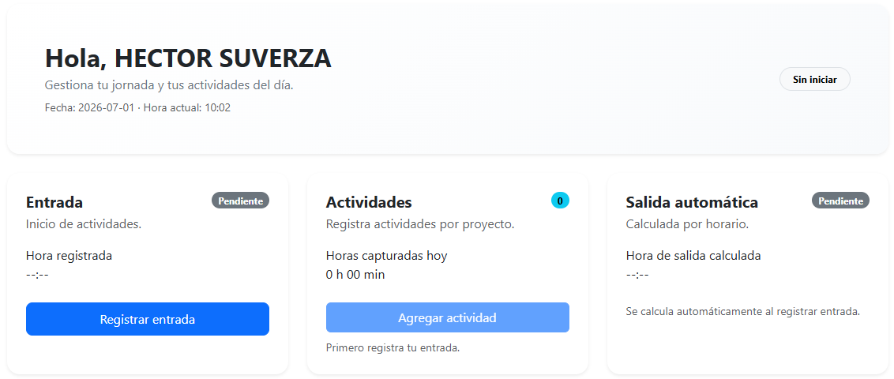
📝 Registrar Entrada
Botón para registrar la hora de inicio de tu jornada laboral.
➕ Agregar Actividad
Acceso rápido para crear un nuevo registro de actividad.
Pantalla principal del supervisor mostrando entrada, actividades y salida automática.
Registros
Entrada y Salida
- El usuario registra su entrada mediante el botón “Registrar entrada”.
- El sistema solicita confirmación y registra automáticamente la hora.
- La salida se calcula automáticamente con base en la jornada laboral de cada usuario.
Actividades
Para agregar un nuevo registro de tiempo:
- Desde el panel principal, haz clic en el botón "Agregar actividad”.
- Se abrirá el formulario de registro. Se establecerá la hora actual como la hora de inicio, automáticamente.
- En el campo "Hora fin", ingresa el número de horas dedicadas.
- En el campo "Proyectos disponibles", selecciona de la lista desplegable el proyecto al que corresponde el trabajo.
- En el campo “Jefe responsable”, selecciona al jefe encargado de tu equipo.
- En el campo “Cliente”, selecciona al cliente de la actividad.
- En el campo "Descripción libre", escribe una breve descripción de la actividad realizada.
- Haz clic en "Guardar actividad por proyecto" para registrar la entrada. Aparecerá en tu tabla de tiempos.
🕐 Hora de Inicio
Se establece automáticamente con la hora actual del sistema al momento de crear el registro.
🕒 Hora Fin
Ingresa manualmente el número de horas dedicadas a esta actividad específica.
👤 Selección de Jefe Responsable
Selecciona de la lista desplegable al jefe encargado de tu equipo que aprobará este registro.
Ventana del formulario de registro de actividad, mostrando: hora de inicio, hora fin, jefe responsable, cliente y proyecto disponible.
Eliminar un Registro
- Localiza el registro en la tabla de tiempos.
- Haz clic en el ícono de "Eliminar" al final de la fila.
- Confirma la acción en la ventana de confirmación que aparecerá.
- El registro se eliminará permanentemente de la base de datos.
Otros registros (Incidencias)
Tipos disponibles: Vacaciones, Permisos, Incapacidad, Cumpleaños.
Registro de Vacaciones y Permisos
- Desde el panel principal, haz clic en el botón "Otros registros”.
- Selecciona la opción deseada (vacaciones o permisos).
- Se desplegará un calendario donde podrás seleccionar múltiples días.
- Agrega un comentario (opcional).
- Haz clic en "Guardar registro" para registrar los días seleccionados. Aparecerán en tu tabla de historial.
Vacaciones
Botón para seleccionar días de registro de vacaciones.
Permisos
Botón para seleccionar días de permisos que se solicitaron.
Incapacidad
Botón para seleccionar de días de incapacidad.
Pantalla de otros registros mostrando vacaciones, permisos, incapacidad y cumpleaños
El día de cumpleaños se registra como asueto automáticamente como un beneficio extra si cae en día laboral.
Registro de Incapacidad
- Desde el panel principal, haz clic en el botón "Otros registros”.
- Selecciona la opción "Incapacidad".
- Se desplegará un calendario donde podrás seleccionar múltiples días.
- Agrega un comentario (opcional).
- Agrega la documentación solicitada por recursos humanos.
- Haz clic en "Guardar registro" para registrar los días seleccionados. Aparecerán en tu tabla de historial.
Calendario Incapacidad
Calendario interactivo que muestra las fechas disponibles para seleccionar días de incapacidad.
Comentarios
Campo de comentarios opcionales para registro de incapacidad.
Botón de guardar
Botón para guardar registro de incapacidad.
Calendario de la sección "Otros registros" mostrando fecha, campo de comentario y botón de guardar registro
Registros extemporáneos
- Permite registrar jornadas pasadas no capturadas previamente.
- Solo se pueden seleccionar días sin registros previos.
- El usuario define manualmente la hora de entrada.
- Posteriormente puede registrar actividades como en un registro normal.
Calendario Interactivo
Calendario interactivo que muestra las fechas disponibles para seleccionar días de registros extemporáneos.
Botón de guardar
Botón para guardar registro de actividades extemporáneas.
Botón de actividad
Botón para agregar actividades a registros extemporáneos.
Calendario interactivo para agregar registros extemporáneos disponibles del mes en curso.
Validación
En esta pantalla podrás visualizar todos los reportes pendientes por revisión organizados por fecha.
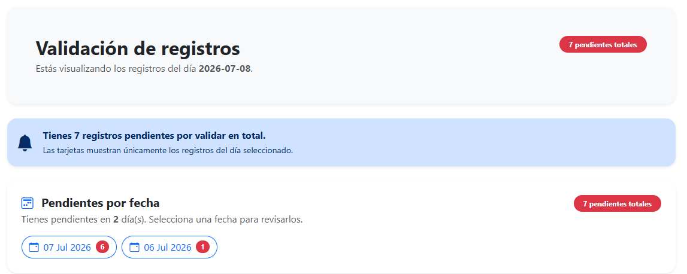
Notificación de pendientes
Notificación de registros totales que aún están pendientes por revisar.
Filtro de pendientes
Filtro de registros pendientes por validar, clasificados
por dia.
Selecciona un día para visualizar todos los registros
correspondientes.
Pantalla general de la ventana de validación del jefe a cargo mostrando notificaciones de registros pendientes por valida.
Validar un Reporte
- Selecciona una fecha que aun tenga reportes pendientes por validar.
- Podrás visualizar todos los colaboradores que tengan reportes pendientes de esa fecha y el estado de sus reportes.
- Selecciona a un colaborador y revisa que todos los registros de tiempo estén correctos.
- Haz clic en el botón "Aprobar" (en verde).
- Confirma la acción en la ventana de confirmación.
- El estado del reporte cambiará a Aprobado y el empleado recibirá una notificación.
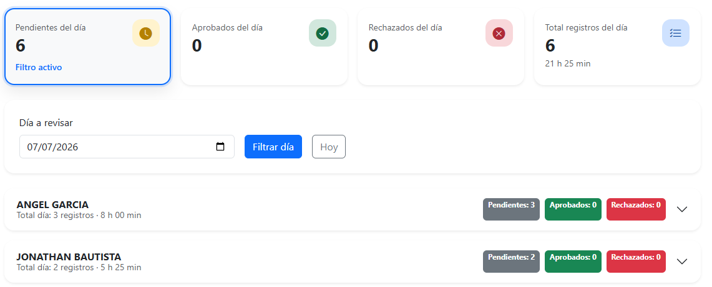
Filtro de registros
Filtro de búsqueda de registros pendientes, aprobados y rechazados.
Pestaña desplegable
Botón que despliega una lista de registros dividida por colaborador.
Pantalla general de la tabla de pendientes del supervisor mostrando el conteo de registros pendientes, aprobados y rechazados.
Rechazar un Reporte
- Abre el reporte que deseas rechazar.
- Identifica los registros con problemas.
- Haz clic en el botón "Rechazar" (en rojo).
- Se abrirá un campo de texto donde debes escribir el motivo del rechazo o las correcciones requeridas.
- Haz clic en "Confirmar rechazo". El empleado recibirá una notificación con tus comentarios.
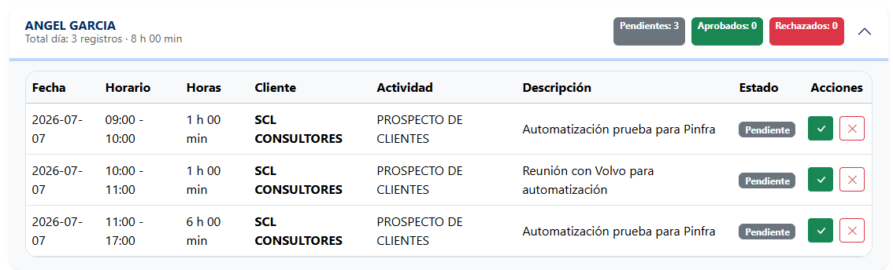
Botones de acción
Botones de acción para aprobar o rechazar un reporte generado por un colaborador.
Pantalla detallada de la tabla de pendientes del supervisor mostrando el información especifica de cada registro.
Historial de Registros
- Se muestra un listado de registros realizados.
- Incluye tipo, fecha y comentarios.
- Permite consultar registros previos del día seleccionado en el calendario.
Total de reportes pendientes
Ventana informativa de reportes que están pendientes de revisar por el jefe a cargo.
Total de reportes aprobados
Ventana informativa de reportes que han sido aprobados por el jefe a cargo.
Total de reportes rechazados
Ventana informativa de reportes que han sido rechazados por el jefe a cargo.
Pantalla del historial de registros mostrando registros pendientes, aprobados y rechazados.
Editar un registro
- Puedes editar registros si aún no han sido aprobados o si fueron rechazados.
- Para consultarlos puedes dirigirte al Historial de Registros y filtrar por estado o por fecha.
- Una vez ubicado el registro que se desea editar, presiona el icono azul que está en la esquina superior derecha de este mismo.
- Podrás cambiar todos los elementos, igual que cuando recién haces un registro nuevo.
Botón de edición
Presiona para abrir una ventana que te permite editar el registro.
Información general del reporte
Ventana informativa de reportes que muestra fecha, hora, actividad y descripción del reporte.
Pantalla del historial de registros mostrando los detalles de cada registro realizado.
Guía para el administrador
Gestión completa de usuarios, proyectos, clientes y configuración del sistema.
Pantalla principal del administrador
La pantalla principal te permite llevar a cabo la gestión de empleados, clientes y proyectos. Cuenta con las siguientes funciones:
- Vista general del sistema con resumen del número de empleados, clientes, proyectos, actividades y registros diarios.
- Menú lateral para gestionar empleados, clientes, proyectos y actividades.
- Acceso rápido para exportación de reportes.
- Botón para cerrar sesión.
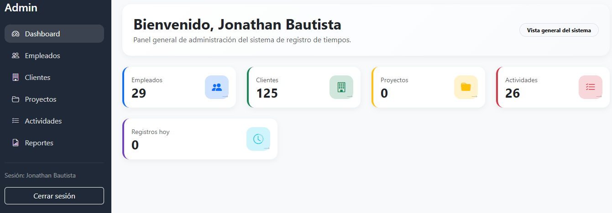
Menú lateral
Menú lateral mostrando las pestañas de colaboradores, clientes, proyectos y exportación de reportes.
Resumen del administrador
Resumen del administrador mostrando el total de usuarios, clientes, proyectos y registros del día en curso.
Pantalla principal del administrador mostrando menú lateral y resumen de empleados, clientes y proyectos.
Gestión de Usuarios
Crear un Nuevo Usuario
- En el menú, selecciona "Empleados".
- Haz clic en el botón "+ Agregar empleado".
- Completa el formulario: nombre completo, correo electrónico corporativo, rol y supervisor asignado (si aplica).
- Haz clic en "Guardar empleado" para crear el usuario.
Editar un Usuario Existente
- En el menú, selecciona "Empleados".
- Haz clic en el ícono de editar (📝) correspondiente.
- Modifica los campos necesarios: nombre, rol, supervisor asignado o estado de la cuenta.
- Haz clic en "Guardar cambios".
Eliminar un Usuario
- En el menú, selecciona "Empleados".
- Haz clic en el ícono de eliminar (🗑️) y confirma la acción.
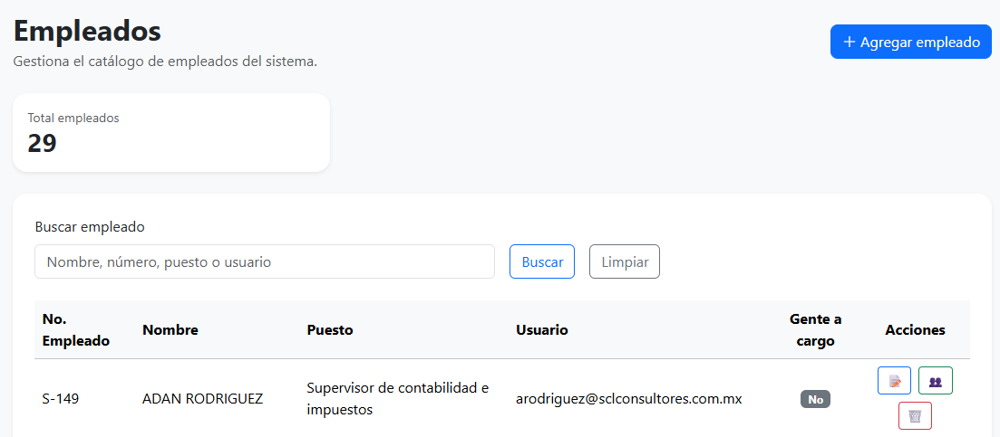
Campo de Nuevo Usuario
Ingresa los datos correspondientes al alta de un nuevo usuario.
Filtro de búsqueda
Introduce el nombre, puesto o número de usuario para hacer una búsqueda precisa de algún usuario.
Botones de acción
Botones de acción para editar, ascender o eliminar a un usuario.
Pantalla principal de gestión de usuarios mostrando total de usuarios, botón de agregar usuario, filtro de búsqueda y lista de usuarios.
Gestión de Clientes
Crear un Nuevo Cliente
- En el menú, selecciona "Clientes".
- Haz clic en el botón "+ Agregar cliente", selecciona a los socios responsables, y nombre del cliente.
- Haz clic en el botón “Guardar cliente” para crear al cliente.
Editar un Cliente Existente
- En el menú, selecciona "Clientes".
- Haz clic en el botón de editar.
- Modifica los campos necesarios: socio responsable o nombre del cliente.
- Haz clic en "Guardar cambios".
Eliminar un Cliente
- En el menú, selecciona "Clientes".
- Haz clic en el botón de “Eliminar” y confirma la acción.
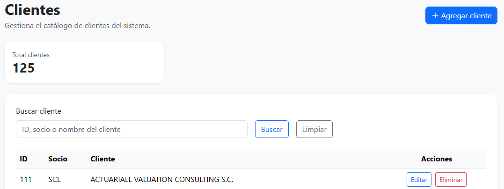
Campo de Nuevo Cliente
Ingresa los datos correspondientes al alta de un nuevo cliente.
Filtro de búsqueda
Introduce el ID, socio a cargo o número del cliente para hacer una búsqueda precisa de algún cliente registrado.
Botones de acción
Botones de acción para editar o eliminar a un cliente existente.
Pantalla principal de gestión de clientes mostrando total de clientes, botón de agregar cliente, filtro de búsqueda y lista de clientes.
Gestión de Proyectos
Crear un Nuevo Proyecto
- En el menú, selecciona "Proyectos".
- Haz clic en "+ Agregar proyecto".
- Completa el formulario: nombre del proyecto, cliente asociado, descripción, horas presupuestadas, actividad a realizar y socio responsable.
- Haz clic en "Guardar proyecto" para crear el proyecto.
Editar un Proyecto Existente
- En el menú, selecciona "Proyectos".
- Haz clic en el botón de editar.
- Modifica los campos necesarios: socio, cliente, proyecto y actividad.
- Haz clic en "Guardar cambios".
Eliminar un Proyecto
- En el menú, selecciona "Proyectos".
- Haz clic en el botón de “Eliminar” para borrar del registro.
- Confirma la acción.
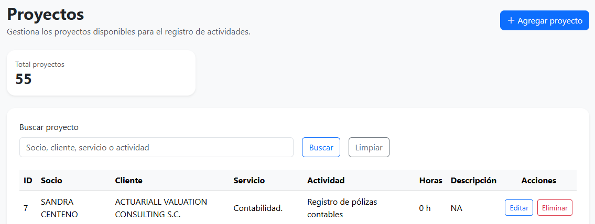
Campo de Nuevo Proyecto
Ingresa los datos correspondientes al alta de un nuevo proyecto.
Filtro de búsqueda
Introduce el socio a cargo, cliente, servicio o actividad para hacer una búsqueda precisa de algún proyecto registrado.
Botones de acción
Botones de acción para editar o eliminar a un proyecto existente.
Pantalla principal de gestión de proyectos mostrando total de proyectos, botón de agregar proyecto, filtro de búsqueda y lista de proyectos.
Exportación de Reportes
- En el menú, selecciona "Reportes".
- Define el rango de fecha.
- Selecciona el tipo de reporte: de asistencias, actividades o ambos.
- Haz clic en "Descargar". El archivo .xlsx se descargará automáticamente a tu computadora.
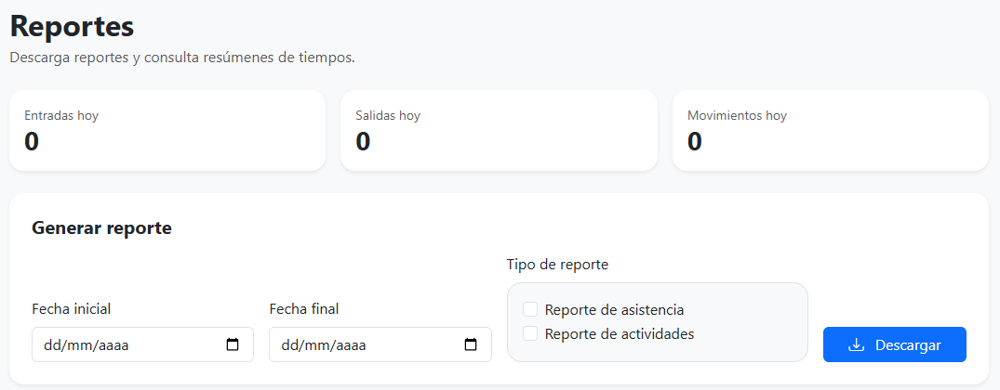
Filtro de fecha
Filtro para búsqueda de reportes por fecha o período de días.
Filtro de tipo de reporte
Filtro para búsqueda de reportes. Se puede seleccionar reporte de asistencia, actividades o ambos.
Botón de descarga
Botón de descarga que genera un documento .xlsx de los reportes filtrados por fecha y tipo de reporte.
Pantalla principal de exportación de reportes.
Preguntas frecuentes
Respuestas a las dudas más comunes organizadas por perfil de usuario.
Generales
El enlace de este nuevo sistema es: Sistema de Registro de Tiempos
Para Colaboradores
Para Jefes a cargo
Para Administradores
Soporte y contacto
Canales de atención para reportar problemas o solicitar ayuda.
Reportar un Problema
Al reportar un problema, toma en cuenta la siguiente información:
- Documenta el problema, anota la hora, la acción y el error
- Captura de pantalla, toma una imagen del error si es posible.
- Contacta al Administrador, envía un email con los detalles.
Problemas Comunes y Soluciones
Si la página no carga, intenta con las siguientes soluciones:
- Recarga la página (Ctrl+R o Cmd+R)
- Borra el caché del navegador
- Intenta con otro navegador (Chrome, Firefox, Safari)
- Verifica tu conexión a internet